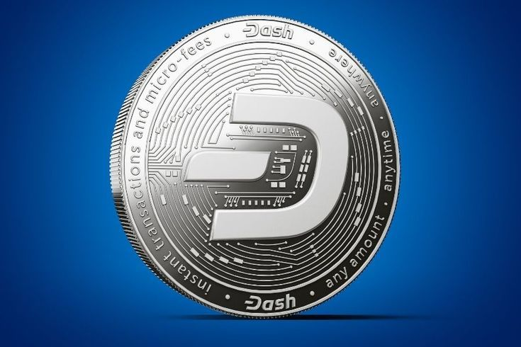
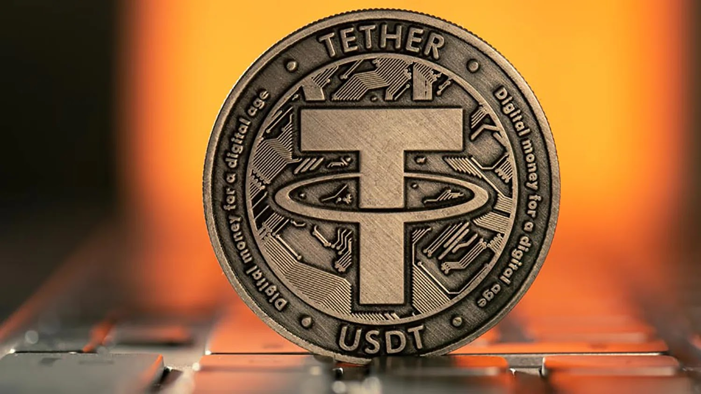

Make choice your crypto:
-
Bitcoin
Пиринговая платёжная система, использующая одноимённую единицу для учёта операций. Для обеспечения функционирования и защиты системы используются криптографические методы, но при этом вся информация о транзакциях между адресами системы доступна в открытом виде.
-
Ethereum
Криптовалюта и платформа для создания децентрализованных онлайн-сервисов на базе блокчейна (децентрализованных приложений), работающих на базе умных контрактов. Реализована как единая децентрализованная виртуальная машина. Концепт был предложен Виталиком Бутериным в конце 2013 года, сеть была запущена 30 июля 2015 года.
-

Dash
Открытая децентрализованная платёжная система в форме криптовалюты на базе блокчейна, использующая механизм повышения конфиденциальности транзакций
-

Tether
Kриптовалютный токен, выпущенный компанией Tether Limited, которая утверждает, что его стоимость на 20 процентов обеспечивается запасами долларов США, хранящимися на её банковских счетах. Основная идея разработчиков данного токена состоит в предоставлении участникам криптовалютного рынка возможности пользоваться стабильным цифровым активом («стейблкойном»), курс которого привязан к курсу доллара США и не испытывает столь сильных колебаний, как курсы других криптовалют[2]. Tether выпущен на платформе Omni Layer, являющейся надстройкой над блокчейном биткойна
-
USD coin
Это криптовалюта, которая называется стейблкоин. Вы всегда можете обменять 1 USD Coin за 1 доллар США, чтобы сделать его стоимость стабильнее. На Coinbase подходящие клиенты могут получать вознаграждение за каждую имеющуюся единицу USD Coin.
-
BNB coin
BNB — криптовалюта , выпущенная крупнейшей криптобиржей Binance . По рыночной капитализации 19 февраля 2021 года обошло большинство криптовалют и стало третьим в мире после биткоина и эфириума .